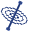

视图操作
程序提供四套不同的方法来改变绘图视图：绘图上的 鼠标 + 键盘（mouse + keyboard） 命令、仅键盘（keyboard only） 命令，以及 控制面板 中的 i 视图统计（View Stats） 和 i 视图平移（View Shift） 控件组。下面分别对它们加以说明。
鼠标 + 键盘
可用于操作视图窗格的（鼠标 + 键盘）操作如下所示。
| 动作 | 鼠标与按键 |
|---|---|
| 绕模型中心旋转 | [右键] |
| 平移 | [右键] + [Shift] |
| 缩放 +/- | 滚轮向上（+）或向下（-） |
| 放大 + | [右键] + [Ctrl] + 拖动 ↑ |
| 缩小 - | [右键] + [Ctrl] + 拖动 ↓ |
| 旋转/滚动向上方向 | [右键] + [Ctrl] + [Shift] |
| 旋转视点 | [右键] + [Alt] |
| 移动视点 +/- | 滚轮向上（+）或向下（-） + [Alt] |
| 移动视点 + | [右键] + [Ctrl] + [Alt] + ↑ |
| 移动视点 - | [右键] + [Ctrl] + [Alt] + ↓ |
基本的鼠标视图操作是相对于模型进行的；加上 [Alt] 键后的等效操作则是相对于当前视点位置进行的。
键盘命令
可用于操作视图窗格的按键如下所示。
| 动作 | 按键 |
|---|---|
| 重新生成视图 | [F5] |
| 缩放到模型范围 [1] | [R] |
| 重置为默认视图 | [Shift] + [R] |
| 面向 +X 方向 | [X] |
| 面向 -X 方向 | [Shift] + [X] |
| 面向 +Y 方向 | [Y] |
| 面向 -Y 方向 | [Shift] + [Y] |
| 面向 +Z 方向 | [Z] |
| 面向 -Z 方向 | [Shift] + [Z] |
| 切换透视模式 [2] | [P] |
| 平移（上、下、左、右） | 方向键（↑、↓、←、→） |
| 绕模型中心旋转 | [Shift] + 方向键（↑、↓、←、→） |
| 旋转视点所观察的方向 | [Shift] + [Alt] + 方向键（↑、↓、←、→） |
| 移动 + | [Home] |
| 移动 - | [End] |
| 旋转/滚动向上方向 | [Shift] + [End]/[Home] |
| 重置为等轴测视图 | [I] |
| 重置为近似等轴测视图 | [Shift] + [I] |
| 放大 | [M] |
| 缩小 | [Shift] + [M] |
视图统计控件组

视图统计控件组为当前绘图的视图状态（放大率、旋转等）提供读/写控件，并附有可将视图快速切换到预定义或自定义设置的其他工具。
工具栏


自定义设置下拉列表： 从此下拉列表中选择一组已保存的视图设置。
保存当前设置： 按此按钮可将当前视图设置保存为自定义视图。将调用一个对话框来为这些设置命名。完成后，已命名的设置将显示在相邻的下拉列表中。以这种方式创建的自定义设置组合是项目的一部分，因此可供随后创建的所有绘图使用。
 删除当前自定义设置： 删除当前选定的自定义视图设置。
删除当前自定义设置： 删除当前选定的自定义视图设置。
锁定/解锁视图： 锁定当前视图，使其视图设置无法更改；这还会禁用控件组中的所有设置字段。
设置
视点： 显示/设置视点在模型坐标中的 \(x\)、\(y\) 和 \(z\) 位置。在各框中输入数值，然后按 Enter 以按指定设置视图。
中心： 显示/设置视图中心在模型坐标中的 \(x\)、\(y\) 和 \(z\) 位置。在各框中输入数值，然后按 Enter 以按指定设置视图。
旋转： 显示/设置当前视图面在模型坐标中的倾角、倾向和滚转角。在各框中输入数值，然后按 Enter 以按指定设置视图。
比例： 显示/设置视图的半径（从视图中心到视图边缘的范围）、视点距离和放大率（依次从左到右）。半径和放大率都会影响视图的表观放大倍率。不过，半径使用固定的模型透视角度，因此减小该值会使模型看起来更近；增大该值会使模型看起来更远。在这两种情况下，为了满足固定的模型透视角度，视点位置会相应移动。放大率可在不改变视点位置的情况下增大或减小视图，但会相应地改变半径值。其结果是：增大该值将放大模型，同时减小半径值；减小该值将缩小模型，同时增大半径值。
模式： 勾选时使用透视模式。未勾选时使用平行模式。在平行模式下，深度按线性方式无限延伸。在透视模式下，深度收敛于一个灭点。
裁剪： 显示/设置模型的裁剪值。
视图平移控件组

视图平移控件组提供交互式工具，用于在 视图窗格中操作绘图视图。
工具
 重置： 将视图重置为其默认渲染状态，清除所有先前的修改（例如对图像中心点的更改）。
重置： 将视图重置为其默认渲染状态，清除所有先前的修改（例如对图像中心点的更改）。
滚球： 三维旋转。
旋转： 在垂直于当前观察方向的平面上对模型进行二维旋转。使用滑块可平滑旋转；使用 / 按钮可增量旋转。
 平移： 使用滑块可垂直或水平平滑地平移（移动）视图。使用滑块旁边的 / 按钮可增量平移。
平移： 使用滑块可垂直或水平平滑地平移（移动）视图。使用滑块旁边的 / 按钮可增量平移。
 放大： 使用滑块可平滑改变放大率；使用 / 按钮可增量改变放大率。
放大： 使用滑块可平滑改变放大率；使用 / 按钮可增量改变放大率。
| 这些内容对您有帮助吗？… 版权与免责声明 | FLAC3D © 2019, Itasca | 原文更新于 2020 年 10 月 8 日 |